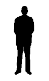
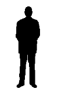
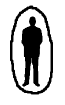
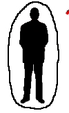
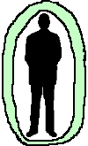
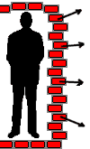

PsiPog.net
Common and Not-So-Common Shields
by Peebrain
The best offence is a good defense. We've all heard this cliche associated with things like sports or martial arts, but it applies to the world of psionics as well. The most fundamental way of protecting oneself against the outside world is a shield. Just like psi balls, they can be programmed to do an unlimited number of tasks, ranging from simply stopping negative energy from entering your body, to interpreting different types energy and responding to each on an individual basis. The average psion doesn't have a dictionary of hundreds of shields in their head for different situations - we each have a small database of regularly practiced shields that can be "tweaked" slightly to fit a given scenario. I, myself, use roughly three different types of shields on a given day, but also have a few advanced shields in mind "just in case".
The most common shield I use is referred to as the Bubble Shield.
Bubble Shield
Bubble Shields are easy to make and can hold up against everyday annoyances. I primarily use them for blocking "normal" humans' empathetic projections. Regulating how solid the shield is dictates how much empathetic information I receive from my environment. I've personally had trouble using them for blocking telepathic information, but keep in mind, my telepathic experiences are very limited. Bubble Shields are also useful against humans who subconsciously leach energy from others. Basically, in those situations, your shield has to only be more powerful than the person's next to you. The "leach" will generally go for the easy target and not even bother with you.
I use two techniques to create Bubble Shields (though sometimes I do outlandish things just to spice it up little  ).
).
| The first is a simple visualization of a shell building from the ground to up, around your body, and finally meeting up over your head. Eggshells and plastic bubbles are typical visualizations. |  |
|  | The second generates the shield from inside the abs, and expands it until it's around the entire body. This is useful for pushing energy off of you, while the first might trap it inside the shield. |
Unfortunately, you can't just learn the Bubble Shield and be set for life. If you engage in any psychic combat, you'll find that your Bubble Shield doesn't amount to crap. A focused attack can go right through or shatter it, depending on the attackers skill and objective. Reconstructing and maintaining it during a fight isn't worth the effort. As mentioned above, the Bubble Shield is very basic. It's great for everyday problems, but for more serious events, it's wiser to make a better type of shield, than trying to hold together a small Bubble Shield.
One shield I'd like to discuss has a specific purpose. I invented it a year or so ago when I nearly got hit by lightning a couple times in a row, and still use it every time there's a storm outside. It has no formal name as far as I know, but I call it the Diffuse Shield.
Diffuse Shield
As implied above, I use this shield for fending off lightning. It started when I was first dabbling in energy manipulation. The first time, I was home alone at night, and it was storming pretty heavy out. I was playing around with psi balls and throwing them around, when I bolt of lighting hit within 30 yards of my house. I didn't see it directly, but everything lit up (and I mean EVERYTHING - I was blinded for about twenty seconds), and my entire house rattled and vibrated. I was scared shitless, of course, so I stopped practicing psi balls until the storm was over. Thinking it could have been a fluke, I didn't worry about it after that.
After a couple of similar experiences, I didn't take any action until the last time (I think almost a year ago exactly). I was outside, and it wasn't storming at all. There were clouds above, but no rain and no lightning. I suddenly heard a "click click click" sound and looked up. For some reason I dove
into the garage (I don't remember seeing anything), and the lightning nearly hit me again. As before, everything shook and our house was rattling like crazy. Being nearly hit while it wasn't even raining made me think it wasn't just a "coincidence". I didn't know exactly how the lightning was targeting me,
but I figured that I must be giving off a different charge (of some sort) than my surrounding environment. To solve this, I kept my internal charge the same (whatever it was), but made a shield to "diffuse" my charge into my environments charge. Any energy I emitted would be the same as my environment, but my
energy would still be the same. I assume it's worked because I've yet to have another experience like that, but I do have to create the shield every time it starts to look like it's going to rain. Of course, I'd rather do that than get struck by lightning, so I don't complain  .
.
| The technique is simple and the shield can be created in about the same amount of time as a Bubble Shield. First I create a thick Bubble Shield (not necessarily strong, just thick). Then I push some parts out to form a spike, and some parts in to form a spike. When I'm finished, it's similar to a
furry ball - the spikes becoming so thin they're like fibers. It's made very "loose" and the fibers flow around freely. (I apologize for the cheesy animation |
 |
I've yet to find another use for this shield other than the one stated. It'll fall apart in an hour or so (depending how you program it), and I can't think of any way it would be useful in a combat situation. Nonetheless, it's served it's purpose: I've yet to be struck  . If you find yourself in a situation similar to mine, give this shield a try.
. If you find yourself in a situation similar to mine, give this shield a try.
While the Diffuse Shield is made for a very specific purpose, the next shield I'm going to discuss can be used for a variety of applications. It's commonly referred to as the Mirror Shield because of its ability to bounce incoming energy in the opposite direction.
Mirror Shield
To be completely honest, I have little experience with this type of shield. I've used it on occasion while "sparring" with people, but I usually like creating something more complex (mainly because the Mirror Shield is kinda boring, in my opinion  ). Despite my lack of interest, it is a popular and useful shield.
). Despite my lack of interest, it is a popular and useful shield.
|  |
The technique is predictable given the name of the shield, but I'll go over it to be complete. Create it as you would any other shield, but program it to reflect incoming attacks. This can be accomplished by a nice "mirror" visualization or a slick silver color.
There are some pitfalls to this shield that can trick-up a newbie. The first is to make sure you create it so you can send energy out through the shield. It's no good if you go to attack and your attack bounces off the inside and nails yourself. Another is to make sure you make it's on the outside of all your other shields. The reason for this is that if you create it inside a Bubble Shield, for example, and the attacker breaks through part of the Bubble Shield, the energy will bounce off, and hit the Bubble Shield again on the way out. Two hits with one stone. |
Though I personally don't find this shield "fun", it is very useful. A skilled psion can easily fend off a series of attacks with this one shield. The next shield is another simple concept, but a little harder to construct, in my opinion. I call it the Marshmallow Shield, though I'm not sure if that's the
formal name  .
.
Marshmallow Shield
The Marshmallow Shield is a thick, gooey, and sticky type of shield. Its primary purpose is to absorb attacks and hold them there for later. It can be programmed to de-patternize the simple attack or just spit it back out. It's hard to break because of its nature, but at best it can slow down a skilled attack.
| One downfall (for me) is that it takes some time to construct properly. The visualization is simple, but it just requires a lot of energy. Basically, you want to picture a thick (probably at least one foot) wall of goo. Use semi-melted marshmallows for visualization. If you construct it in layers (which I do sometimes, to make it easier), you'll want to make sure the layers melt into each other completely - they can be a pain and separate on their own sometimes. You might want to put some Bubble Shields on the outside and inside of it if you're making it really gooey. It should hold it's own shape for some time, but it might require some maintenance depending on how you make it. |  |
As I stated above - it can take a while to make, even if you are somewhat skilled. It's not particularly good at handling sharp objects, but it's not meant to be used as the only line of defense. Combine it with other defensive shields to provide better protection. After it's made it can be repaired somewhat easily, so you can keep it up for long periods of time.
One shield that can be combined well with the Marshmallow Shield is the Force-Bubble Shield. It takes longer to construct, but provides some of the best protection.
Force-Bubble Shield
In my opinion, the Force-Bubble Shield is one of the coolest out there  . Just recently I've been experimenting with Force-Bubble Constructs, and the shield version is very useful and holds up against a lot of force. I can be used in combat or in any situation where you need to physically put force on an object. The downside is that it is pretty advanced
and takes a lot of time to make (in most cases). Skill in telekinesis is useful.
. Just recently I've been experimenting with Force-Bubble Constructs, and the shield version is very useful and holds up against a lot of force. I can be used in combat or in any situation where you need to physically put force on an object. The downside is that it is pretty advanced
and takes a lot of time to make (in most cases). Skill in telekinesis is useful.
|  |
The visualization is fairly simple but tedious. The one I use is to visualize a bunch of "psi-bricks" stacking up and forming a brick wall around myself. You'll also need some "psi-mortar" as well to stick it all together Also, to incorporate the idea of force, I visualize a bunch of arrows pointing outwards on the bricks. In physics, force is usually shown by an arrow, so it works well for me (having a somewhat scientific mind). Think of something that means "force" to you and use it. The key isn't necessarily the visualization, but the practice. This shield takes a lot of skill to construct properly. |
The Force-Bubble Shield is extremely useful and powerful. While the previous combat shields address the issue of dealing with an attack, the last shield's purpose is to help you not get in situations where you'll get attacked. It's known as the Cloaking Shield, or in some cases, the "Hedge" Shield.
Cloaking Shield
I find this shield the most fun to play with. With it, you can walk up to someone while their looking right at you and scare the crap out of them (yes, that is fun!  ). Previous experience with telepathic suggestion will help you with this shield's properties.
). Previous experience with telepathic suggestion will help you with this shield's properties.
To create it, you'll want to form a mental image of what you want to project onto others. You can project yourself as "invisible" or something static (for example, a hedge, box, etc...). Whatever you choose, you should have a clear understanding of what the objects energy is like. You'll want to create a shield that emits this same type of energy. The goal isn't to physically make yourself look like a hedge, but rather to get the attacker to glance over you. Broadcast something like "Nothing to see here, just a hedge".
Another form of this shield would be to emit a "normal" human's energy field. When the attacker sees you, they'll either underestimate your ability, or ignore you completely. Obviously, visualizations of whatever you want to become work well for forming this shield. Remember though, you're not just creating a shield, your clouding the mind of your opponent. This is where telepathy is useful. Incorporate telepathic suggestion and broadcasting into the shield. Visualize your opponent becoming confused.
This isn't an easy shield to make, but it is useful. It doesn't take that long to make, just skill. With anything, practice makes perfect, and this shield is fun to practice  .
.
Conclusion
Shields are essential to psions - from newbie to advanced. One last note: keep in mind that the two shields are better than one. Combine shields and layer them wisely to significantly increase your protection. Any shield can be cracked, but having backups for the backups ensures you'll have time to react to an attack.
~Sean (aka Peebrain)
Click here for printable version
Last Modified on May 26 2002
All Content, Images, Video, Text, and Software is © Copyright 2000-2006 PsiPog.net and their respective authors. All Rights Reserved.
You must agree to the Terms of Service and Privacy Policy to view this website. Click here to contact the webmaster.